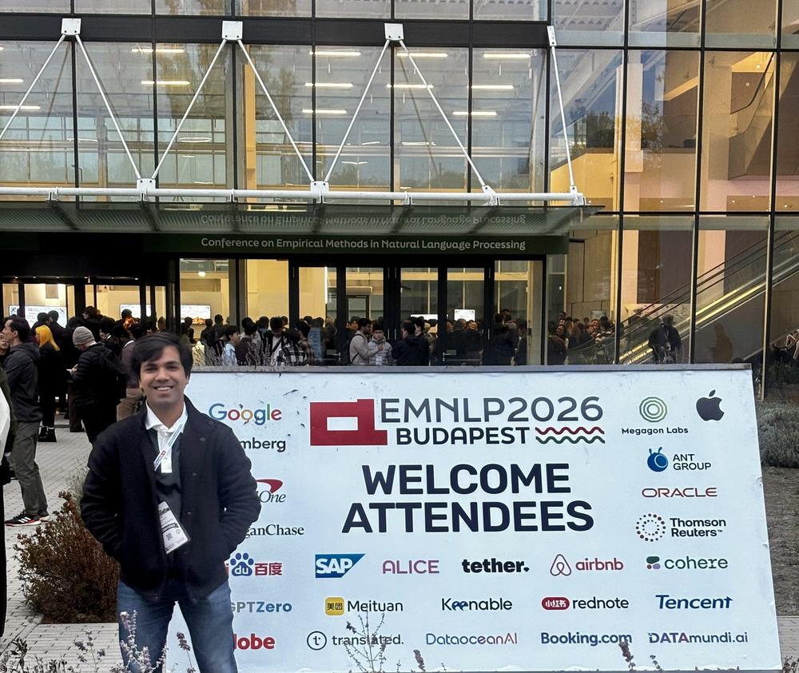
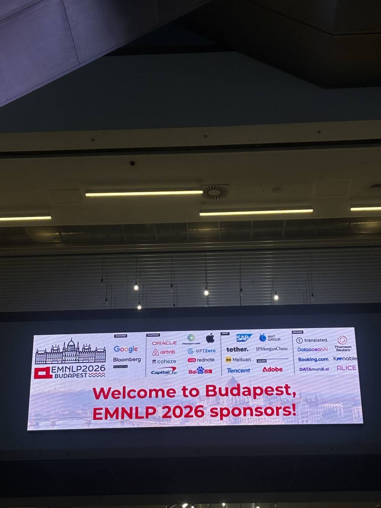
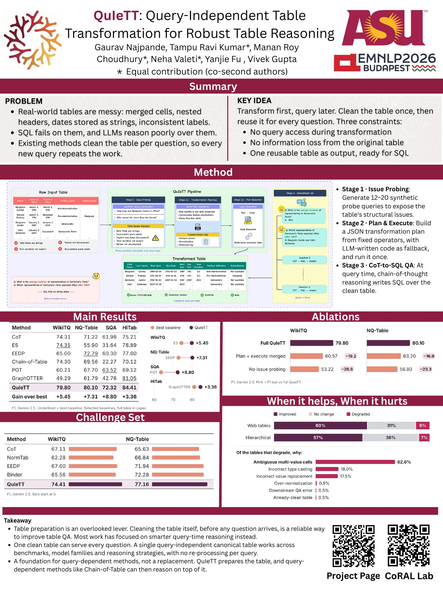
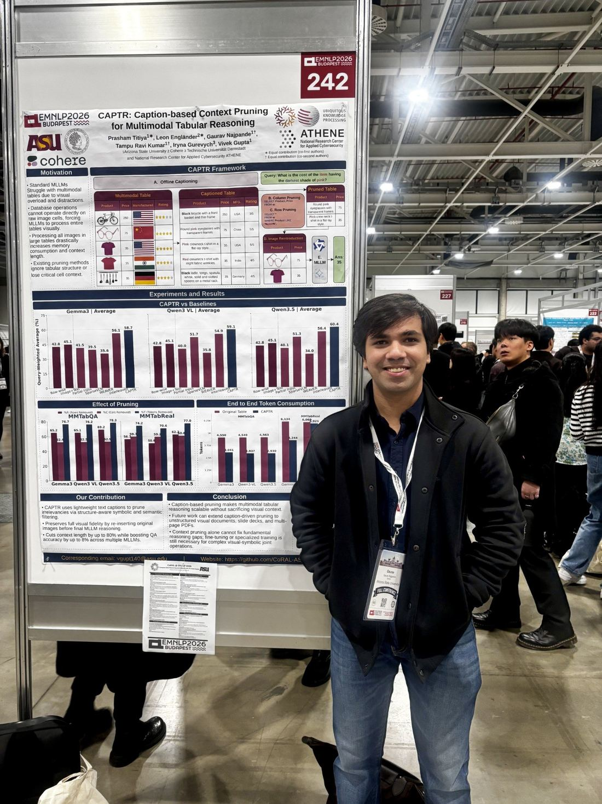
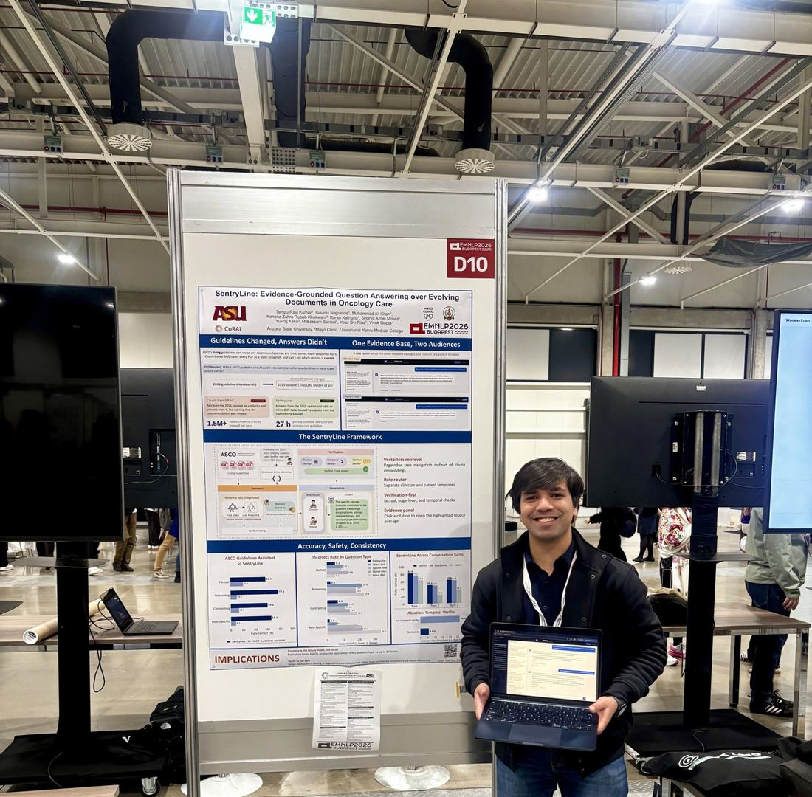
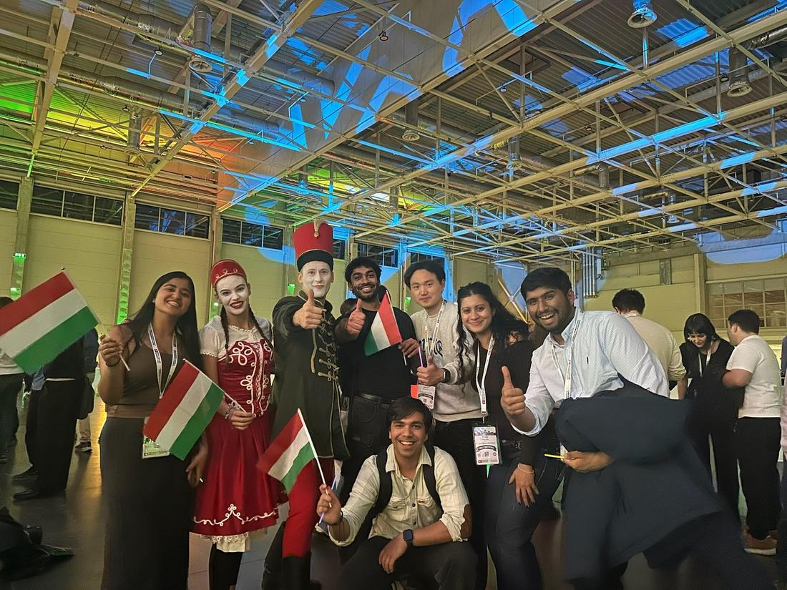
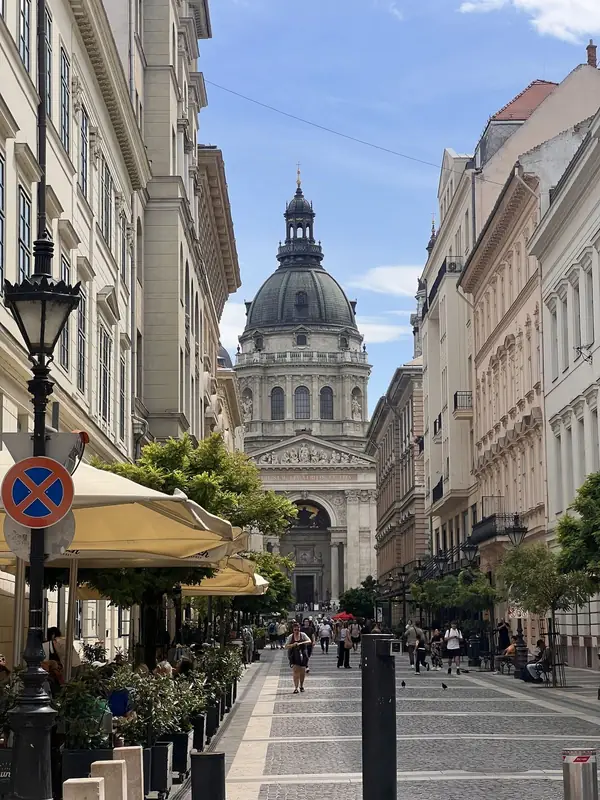

Field Notes from EMNLP 2026
Three papers, new perspectives, and a memorable week in Budapest.

From October 23–30, I was in Budapest, Hungary, for EMNLP 2026. Three of my papers had been accepted at the conference, it was my first time attending EMNLP in person, and it was also my first solo trip to Europe. I had been looking forward to presenting our work for months.
What I hadn't fully anticipated was everything that would happen beyond those presentations: hours spent exploring posters, conversations with researchers from around the world, visits to industry booths, and the chance to see how many different questions people are asking across NLP. By the end of the week, those experiences felt just as important as presenting the papers themselves.

Three Papers at EMNLP 2026
All three papers were presented on Sunday, October 25, in Hall H, making it a particularly exciting and busy day.
QUIETT — Findings of EMNLP 2026
Query-Independent Table Transformation for Robust Reasoning
October 25 | 11:00 AM–12:30 PM | Hall H
Real-world tables are often messy, with merged cells, inconsistent formatting, and complex structures that make reasoning difficult for language models.
In QUIETT, we explored a different approach: instead of transforming a table separately for every question, we transform it once into a reusable, SQL-ready representation that can support multiple downstream queries.
This work focuses on making table reasoning more reliable by addressing structural challenges before question answering begins.

CAPTR — EMNLP 2026 Main Conference
Caption-based Context Pruning for Multimodal Tabular Reasoning
October 25 | 4:00–5:30 PM | Hall H
Multimodal table reasoning becomes challenging when tables contain large amounts of textual and visual information, much of which may be irrelevant to the question.
CAPTR explores how image captions can guide context pruning, removing unnecessary table information while retaining the context needed for accurate reasoning.
This was collaborative work with the Ubiquitous Knowledge Processing (UKP) Lab, and it was exciting to share research connecting multimodal understanding with more efficient reasoning.

SentryLine — EMNLP 2026 System Demonstrations
Evidence-Grounded Question Answering over Evolving Documents in Oncology Care
October 25 | 4:00–5:30 PM | Hall H
Unlike static knowledge bases, clinical guidelines evolve as new evidence and recommendations emerge. This creates challenges for AI systems that need to provide accurate, trustworthy, and up-to-date answers.
SentryLine addresses this through evidence-grounded clinical question answering, providing citations and identifying potentially outdated recommendations as oncology guidelines change.
Developed in collaboration with Mayo Clinic, this project was particularly interesting because of its connection to real-world clinical information needs.

Beyond My Own Papers
One of the things that made EMNLP especially memorable was seeing how much work came from our Complex Data Reasoning and Analysis Lab (CoRAL) at Arizona State University. Together with collaborators from the Ubiquitous Knowledge Processing (UKP) Lab, CogInt Lab, and Mayo Clinic, CoRAL had nine papers across the Main Conference, Findings, and System Demonstrations. The projects spanned structured and multimodal reasoning, agent systems, model reliability, and real-world applications.
Beyond CAPTR, our Main Conference papers included CORE-T, which retrieves relevant, join-compatible tables for multi-table Text-to-SQL; ChartAttack, which investigates misleading chart generation and model robustness; and CAST, which uses action-level critiques to train more reliable long-horizon tool-calling agents.
Alongside QUIETT in Findings, there was DeALOG, a decentralized multi-agent framework built around a shared, provenance-aware log, and Trajectory Self-Feedback in Diffusion Language Models, a survey of how these models use intermediate predictions to guide themselves. In System Demonstrations, SentinelEdge presented a lightweight, streaming approach to auditable scam-call detection, alongside our clinical QA system, SentryLine.
I also helped present and discuss some of this work at the conference. It was rewarding to move between explaining research from our lab and learning about projects from other groups. Seeing so many different ideas come together—and meeting the people behind them—gave me a much broader perspective than I could have gained from reading the papers alone.
Exploring the Poster Sessions
Whenever I had time away from our presentations, I walked through poster sessions across a wide range of topics: Efficient Methods for NLP, Human-AI Interaction, Multimodal Language, NLP and Symbolic Reasoning, Question Answering, Resources and Evaluation, Retrieval & Text Mining, and LLM Agents.
Some posters were closely related to problems I work on, while others took me into areas I don't usually explore. I couldn't absorb every technical detail in one pass, but seeing these ideas side by side was valuable in itself. A poster session makes it easy to stop, ask a question, and hear why someone approached a problem in a particular way rather than only reading the final version in a paper.
What stood out to me was how often the same challenges appeared across seemingly different areas: making systems more efficient without losing useful information, measuring what models actually understand, retrieving the right context, and grounding answers in evidence. Those connections made me think differently about my own work on tables, multimodal reasoning, and reliable AI.
The People Behind the Research
Another highlight was meeting so many people: PhD students, professors, researchers, and people working on AI in industry. Some were working on problems very close to mine; others brought completely different perspectives. I enjoyed getting to know people beyond their paper titles and affiliations.
As someone who spends so much time working through experiments and code, it was refreshing to step outside my own research environment. Being around people at different stages of their research careers gave me a broader sense of the community and the directions people are excited about. The conversations between sessions, in the poster hall, and at social events were a big part of what made the trip memorable.
Visiting the Industry Booths
I also made time to explore the sponsor and exhibitor area. I visited booths from Apple, Oracle, Superhuman, Bloomberg, Capital One, JPMorgan Chase, and SAP, and other companies, curious to see what teams were working on and how their interests connected with the research presented at the conference.
I enjoy both the research and engineering sides of AI, so it was interesting to have academic posters and industry exhibits in the same space. It was a reminder that many of the questions we investigate in research—reliability, evaluation, efficiency, and useful context—also matter when people try to build systems for real users.
DocInsights and Dan Roth's Keynote
On October 29, I attended DocInsights: Workshop on Document Intelligence and Understanding. The workshop focused on understanding documents beyond plain text: tables, layouts, visual elements, evidence grounding, and reasoning across complex sources. These themes are closely connected to my interests in structured data and trustworthy AI.
One of the talks I attended was Prof. Dan Roth's keynote, AI for Data and Data for AI. The title captured a relationship I find particularly interesting: AI can help us work with complex data, but the way we represent, organize, and evaluate data also shapes what AI systems can do reliably. I found myself connecting that idea back to QUIETT and to my broader work on evidence-grounded reasoning.
Listening to researchers approach document intelligence from different angles—retrieval, multimodal understanding, parsing, and evaluation—was a good reminder of how much there still is to explore. The workshop was a fitting way to round out a week of learning from research both inside and outside my usual areas.

More Than a Conference
Outside the venue, I also got to explore Budapest. Traveling alone to Europe for the first time made even the ordinary parts of the trip feel new: walking through unfamiliar streets, finding places to eat, and discovering the city between conference sessions.
I arrived thinking mostly about my three presentations. I left thinking just as much about the posters I had seen, the people I had met, and how many interesting research directions exist beyond the projects on my own desk.

EMNLP reminded me that research doesn't happen only in papers, experiments, and code. It also happens when people explain their ideas to each other, challenge assumptions, and help one another see problems from a different angle.
I'm grateful to my advisor, Prof. Vivek Gupta, my coauthors, collaborators, and everyone at CoRAL for their support throughout this journey. Presenting at EMNLP was a milestone for me, but meeting the community in person is what made it feel real.